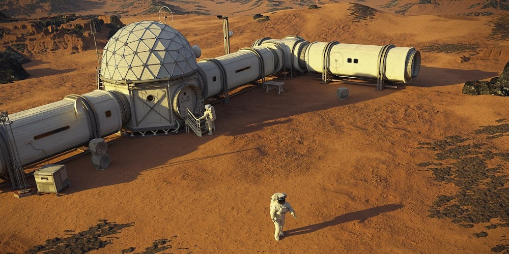

Структура наших досліджень
- Далекий космос
- Екзопланети
- Клас Земля (життєпридатні)
- Газові гіганти
- Крижані світи
- Зіркові системи
- Екзопланети
- Сонячна система
- Місії на Марс
- Дослідження супутників Юпітера
Алгоритм підготовки до польоту
- Проходження медичної комісії
- Теоретична підготовка:
- Фізика чорних дір
- Навігація за пульсарами
- Тренування в центрифузі
Найближчі старти (Зворотний відлік):
- Місія "Альфа" (Оріон)
- Місія "Бета" (Андромеда)
- Місія "Гамма" (Чумацький Шлях)
Космічний глосарій
- Світловий рік
- Відстань, яку світло долає за один земний рік.
- Сингулярність
- Точка у просторі-часі, де гравітація стає нескінченною (центр чорної діри).
- Тераформування
- Процес зміни клімату планети для створення умов, придатних для життя людей.
Наші космічні технології
Деталі експедиції на Марс

Наші поселення на Марсі використовують найсучасніші технології регенерації кисню. Кожен модуль оснащений захистом від радіації та пилових бурь. Проєкт передбачає повну автономність колонії вже за 5 років після висадки першої групи.
Hot
Місія: Альфа
Політ до супутників Юпітера.
New
Місія: Зета
Дослідження хмари Оорта.
Тут загальний опис експедиції...
Тут технічні характеристики корабля...
Тут будуть відгуки клієнтів...